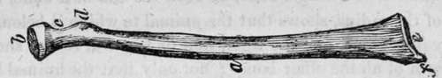

The Human Skeleton. Part 7
Description
This section is from the book "Human Physiology For The Use Of Elementary Schools", by Charles Alfred Lee. Also available from Amazon: Human Physiology, for the Use of Elementary Schools.
The Human Skeleton. Part 7
47. In the fore arm we find two kinds of motion, one at the elbow, backward and forward, and also a rotary motion, by which the palm is turned upward or downward, as occasion requires. These motions are called supination and pronation. Flexion and extension of the arm are performed by means of the ulna, which being articulated, with the os humeri, by a hinge joint, carries the radius along with it in all its movements. Now while the larger part of the ulna is above, the larger part of the radius is below, so that while the former presents a large surface for articulation at the elbow, the latter does the same at the wrist, and this inverse arrangement also contributes to the uniform diameter of the fore arm. While the fore arm is thus attached to the os humeri, the radius is attached to the wrist; so that when we turn the palm of the hand, the radius rolls on the ulna carrying the hand with it. Indeed so admirable is this contrivance, that both motions may be performed at the same time, for while we are bending the arm, we may also be rotating or turning it upon its axis. To facilitate these motions, it will be observed that near the elbow, a tubercle of the radius plays into a socket of the ulna, whilst near the wrist, the radius finds the socket, and the ulna the tubercle.
g, the ulna ; a, the radius.
48. It has been remarked that the ulna has a hooked process, the olecranon, e, which catches round the lower end of the humerus, forming with it a hinge joint. The radius also, has a neat, small, round head, h, bound to the ulna by ligaments, which, as it turns, carries the hand, which is attached to its lower extremity along with it. Now in animals that have solid hoofs, such a motion would be useless and a source of weakness, accordingly we find these bones united together and consolidated in such animals. By an examination of these bones alone, the anatomist is able to determine whether the animal to which they belonged, perhaps thousands of years ago, was carniverous or graminiverous, that is, whether he was an animal or a vegetable feeder ; whether he had claws or hoofs. If he finds merely the end of the radius, and notices in it a smooth depression where it bears against the humerus, and the smooth surface that turns on the cavity of the ulna, he concludes at once, that the animal had a paw, and a motion of the wrist which implies claws. It was in this way that Cuvier and Buckland made those singular and interesting discoveries in relation to antediluvian fossil bones, which have given such importance to geological researches.
49. But let us examine this point a little further. If the examination of a single bone, or even the end of a bone, like that of the radius, shows that the animal to which it belonged was carniverous, like the tiger, lion or leopard, it also shows the form of all the other bones ; not only that the animal had teeth to rend his prey, and claws to hold it, but a spinal column to admit of such motion, such writhing and turning as is necessary to secure it, and such a stomach and intestines as are adapted to digest it, in short, such as belong to the carmverous class. How beautiful is that process of reasoning, and how interesting that science which enables us from a small portion of a skeleton, to determine the existence of a carniverous animal, of a fowl, or a bat, a lizard, or a fish; which teach us the wisdom and the extent of that plan, which adapts the members of every creature to its proper office ; which exhibits a system extending through the whole range of animated beings, whose motions are conducted by the operation of muscles and bones.
50. Twenty nine bones enter into the composition of the "human hand, of which eight constitute the wrist. The metacarpal bones support the ringers, and are four in number, the thumb being directly articulated with the wrist. From this arrangement there results great strength, mobility, and elasticity. Indeed, it may be said, that on the length, strength, free lateral motion, and perfect mobility of the thumb, depends the power of the human hand. In strength it is said to be equal to that of all the fingers, hence it is called pollex,. from "pollere," to have much strength. If we examine the thumb of the monkey, we find that it extends no farther than to the root of the fingers. The fingers would be comparatively of little use, were it not for the fleshy bed of the. thumb.
Bones of the hand.
51. The bones of the lower extremity consist of the thigh, leg and foot. The thigh bone (os femoris,) is the longest bone of the human skeleton, and is remarkable for its great strength, supporting, as it does, the whole body, and often several hundred pounds in addition. The hip joint is a perfect specimen of the ball and socket joint. This is for the purpose of giving great extent and variety of motion to the legs, as in walking. The end of the hip bone is perfectly round like a ball, and covered with a smooth, shining cartilage ; and this is received into a deep cup, also lined with cartilage and moistened with the synovial fluid. Besides all this, there are strong ligaments all around, binding the bone firmly in its place, so that it is a very rare thing for it to be dislocated.
52. The knee is a hinge joint of singular construction. The rubbing parts are flat and shallow, and therefore would easily get out of place, were it not for the very strong ligaments which surround it. When the ligaments on the inside of the joint are too weak, a person is said to be knock kneed, because the knees knock together. In weakly children, this deformity may frequently be cured by exercise. It can also be shown that, owing to the air being completely shut out of the joint, forming what is called a vacuum, the bones of the knee are held together by a constant pressure of the atmosphere equal to sixty or seventy pounds. On the fore part of the knee, is a movable bone of a flat, round shape, called patella, or knee pan, over which a cord or tendon passes, which is made by a contraction of all the muscles on the fore part of the thigh. This serves as a pulley, and enables the muscles to act to greater advantage, by increasing the distance of the rope from the centre of motion.
Continue to:
Tags
humans, anatomy, skeleton, bones, physiology, organs, nerves, brain